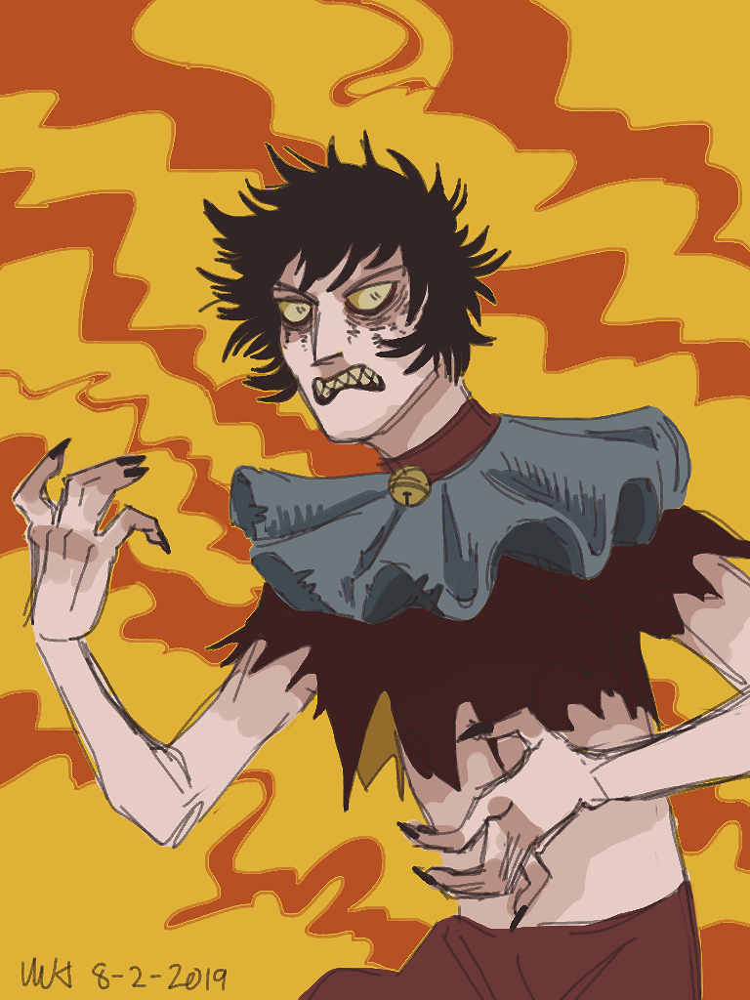
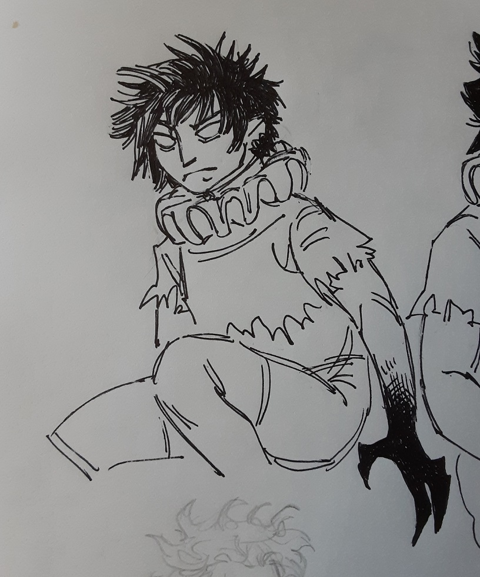
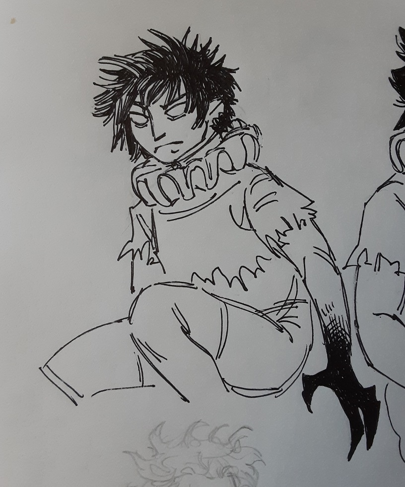
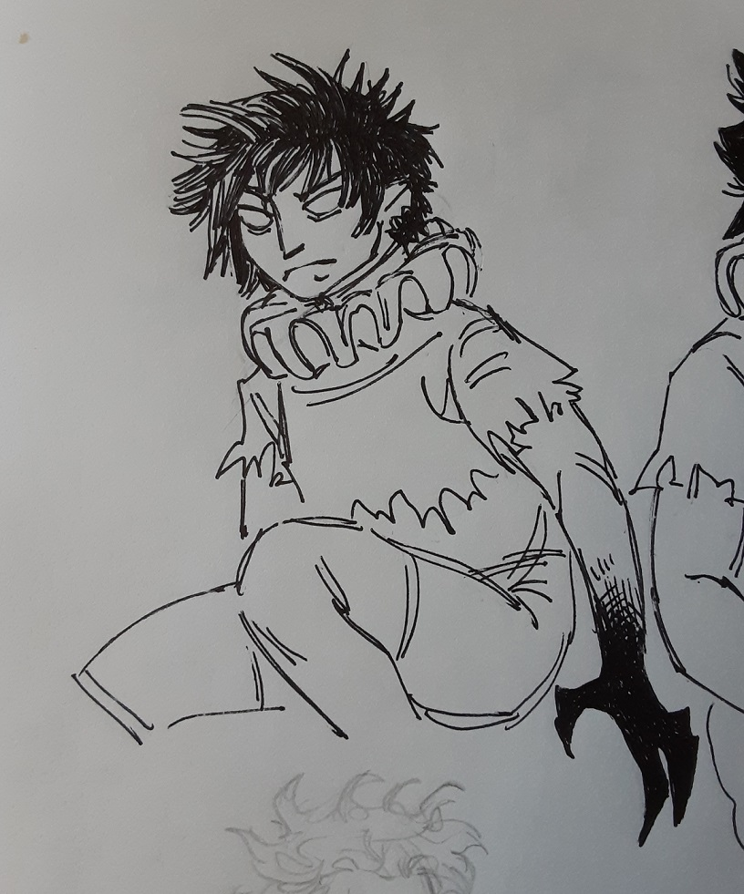
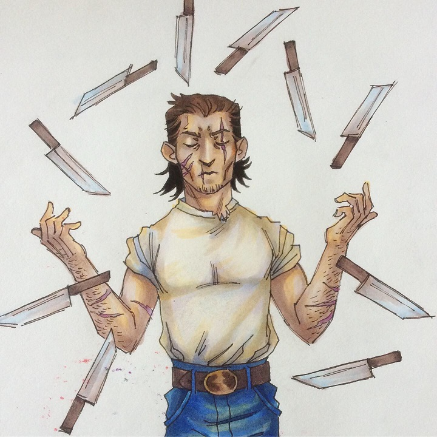
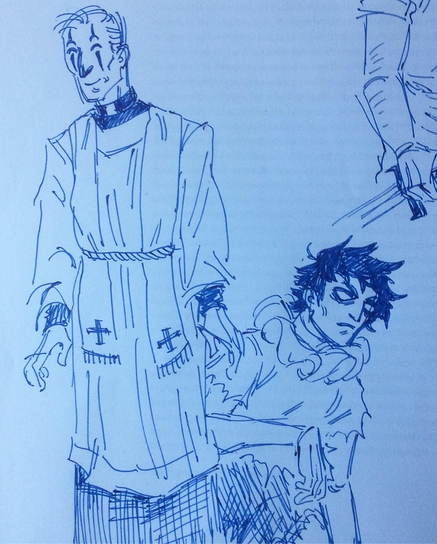
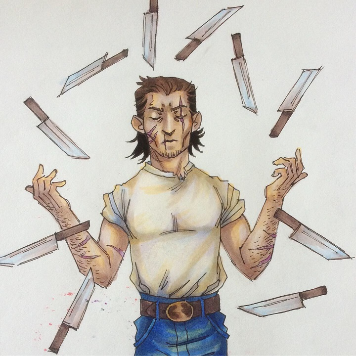
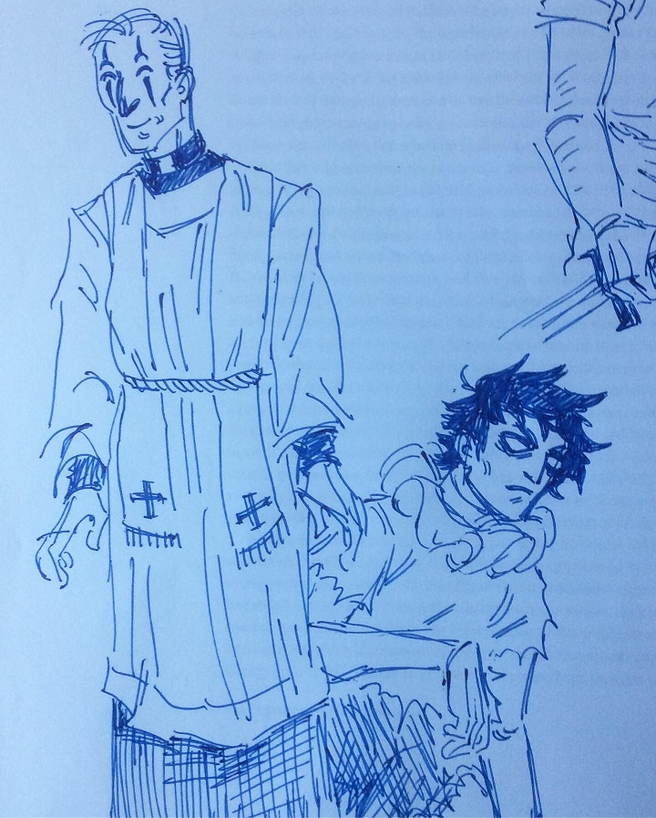

Everett Klein
Illustrator

Green's Circus
Miss Green's Traveling Circus is scrappy group of circus performers run and managed by Miss Green. The circus was founded by her father, who ran it for many decades prior to his retirement. The performers are desperate to keep the circus running in spite of declining popularity. When they choose to take in a feral child, the circus is plunged into trouble.
These characters are intended to eventually be used in a comic. Details of the story are still in development, as well as the final style for the project.



 


 


